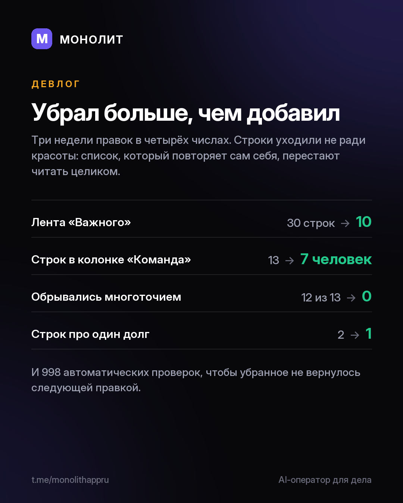

Дневник разработки · 20.08.2026
Главной работой этих недель было вычитание

Лента «Центра важного» показывала 30 строк, и половина повторяла соседнюю колонку — осталось 10. В панели ассистента 12 строк из 13 обрывались многоточием, теперь не обрывается ни одна. Про один просроченный долг приложение писало дважды, разными словами: это одно число, посчитанное с двух сторон.
Так закрылся список из девяти экранов, от Пульса до Ассистента, за двенадцать дней. Правило было одно: если строка сообщает о проблеме, в ней должно быть действие; если число посчитано, оно печатается один раз и целиком.
Что дальше: шифрование базы на Android; свежая версия в RuStore, там пока 1.4.19; ассистент, который сам вынимает обещания из переписки, — включу, когда перестанет выдумывать; подписка после беты, у ранних тестеров условия останутся особыми.
Сроков не называю намеренно: названный срок в одиночной разработке всегда врёт.
Сейчас 1.4.24. Тестируете всерьёз и готовы писать, что не так, — @sbphotoshoter
МОНОЛИТ — учёт заказов, клиентов и денег одной фразой. Windows и Android, бесплатная бета.
Скачать Читать канал